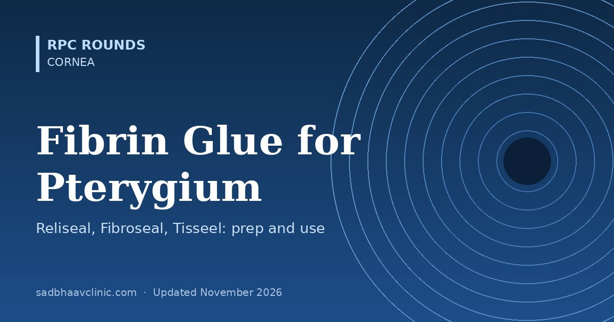

Last updated: November 2026
Fibrin glue has largely replaced sutures for fixing the conjunctival autograft in pterygium surgery. Three kits are common in Indian theatres: Reliseal and Fibroseal (Indian) and Tisseel (Baxter). All work the same way, but they differ in how they are stored, prepared and timed. This page explains the chemistry, preparation, technique and pitfalls so you are ready when the scrub nurse hands you the kit.
Fibrin glue copies the last step of the clotting cascade. It has two parts that are kept apart until use:
| Component | Contains | Role |
|---|---|---|
| Sealer (fibrinogen) component | Concentrated human fibrinogen (with factor XIII), dissolved in aprotinin solution | Forms the fibrin mesh; aprotinin slows breakdown of the clot (fibrinolysis) |
| Activator (thrombin) component | Human thrombin, dissolved in calcium chloride solution | Converts fibrinogen to fibrin; calcium is needed for clotting and factor XIII activity |
When the two meet, a white, rubbery fibrin clot forms within seconds to a minute. The clot is absorbed over days to a couple of weeks, by which time the graft has adhered.
| Reliseal | Fibroseal | Tisseel (Baxter) | |
|---|---|---|---|
| Made in | India (Reliance group) | India | Austria/UK (Baxter) |
| Form | Freeze-dried kit | Freeze-dried human fibrinogen and thrombin kit | Freeze-dried kit, or frozen ready-filled double syringe |
| Listed contents | Fibrinogen 70 mg (yellow cap), bovine aprotinin solution 3000 KIU (red cap), thrombin 500 IU (blue cap), sterile water for injection | Human fibrinogen and human thrombin (1.0 mL kit commonly sold) | Sealer protein, aprotinin solution, thrombin 4 IU and 500 IU, calcium chloride solution |
| Storage | As per insert (refrigerated) | 2–8°C | Kit 2–25°C (do not freeze); frozen syringe at −20°C or colder |
| Warming needed? | As per insert | As per insert | Kit: dissolve at 37°C (Fibrinotherm or water bath). Frozen syringe: thaw (about 5 minutes in a sterile water bath for the 2 mL pack) |
| Use after preparation | As per insert | As per insert | Within 4 hours; do not refrigerate again |
The preparation principle is the same for all three, but warming steps, vial sizes and timings differ: always read the insert in the box, and confirm each vial by its label as well as its cap colour before mixing.
| Kit | Fibrinogen (sealer) | Aprotinin | Thrombin | Diluent |
|---|---|---|---|---|
| Reliseal | Yellow cap (70 mg) | Red cap (bovine, 3000 KIU) | Blue cap (500 IU) | Sterile water for injection |
| Fibroseal | Not colour-coded in the leaflet | — | — | Water for injection |
| Tisseel kit | Sealer protein vial | Aprotinin solution vial; drawn with the blue-scaled syringe | Thrombin 4 IU and 500 IU vials; prepared with the black-scaled syringe | Calcium chloride solution (for thrombin) |
Reliseal: fibrinogen (yellow) is dissolved in the aprotinin solution (red), and thrombin (blue) in the sterile water provided. Memory aid for this kit only: yellow + red make the sealer, blue makes the activator. Reliseal aprotinin is bovine, so ask about previous fibrin glue or aprotinin exposure and allergy.
Fibroseal: the leaflet gives no cap colours, and in practice the pairing looks reversed compared with Reliseal: the yellow-capped vial is mixed with water, and the red-capped vial is mixed with the blue-capped vial.
Colours are not universal. The same cap colour can mean a different component in another brand. Never pair vials from habit or colour alone: read each label, and follow the leaflet of the kit in your hand.
Cap colours belong to each manufacturer and can change between batches or presentations.
General steps (check the kit insert)
Slow or fast thrombin: Tisseel kits contain two thrombin strengths. 4 IU/mL sets in up to about a minute, giving time to position and smooth the graft; 500 IU/mL sets within seconds and is better for haemostasis. Many surgeons prefer the slow-setting thrombin, or dilute thrombin, for autografts. Indian kits usually provide one thrombin strength, so you have less working time: position the graft quickly.
Use the least glue that does the job: thick layers lift the graft, form lumps and cost more. One kit is usually enough for one or two eyes in the same session, within the use-by time.
| Advantages | Disadvantages |
|---|---|
| Shorter surgery than suturing | Cost of the kit |
| Less pain, irritation and foreign body sensation after surgery | Short working time once mixed, especially with fast thrombin |
| Lower recurrence than sutures in most studies | Graft displacement or loss if the bed is wet or the graft is too thick |
| No suture-related granulomas, abscesses or removal | Made from pooled human plasma: theoretical risk of transmitting infection despite viral inactivation |
| Even adhesion without tension points | Allergy, rarely anaphylaxis, especially with repeated aprotinin exposure; cold-chain storage needed |
A Cochrane review comparing glue with sutures for conjunctival autografts found that glue probably reduces recurrence and shortens surgery, with graft displacement possibly a little more common. Autologous blood (letting the patient's own clot fix the graft) is a free alternative with no plasma-product risk, but it has more graft displacement and retraction in several trials.
Fibrin glue is biological and absorbable, used under conjunctiva and lamellar grafts. Cyanoacrylate ("superglue") is synthetic, sets hard, is not absorbed and is toxic beneath tissue; it is used on the corneal surface to seal small perforations, covered by a bandage contact lens, and never to fix a conjunctival graft.
Amniotic membrane fixation, lamellar and endothelial keratoplasty flaps, sealing small corneal perforations with a patch graft, LASIK epithelial ingrowth, conjunctival wound closure in glaucoma and strabismus surgery, and selected retinal procedures (e.g. optic disc pit, under trial conditions).
Pearls
Common mistakes
Related: Pterygium for Residents: Grading, Surgery and Preventing Recurrence, Keratoplasty Types: PK vs DALK vs DSAEK vs DMEK, Ocular Surface Squamous Neoplasia (OSSN): Diagnosis and Topical Chemotherapy, Cornea, Ocular Pharmacology: High-Yield Guide for Residents.
📘 Want more exam-ready material? See Most Commons in Ophthalmology on Kindle, or browse all my books.
Looking for an eye specialist in Ahmedabad? Eye Department at Sadbhaav or book a consultation with Dr. Dhaval Patel.